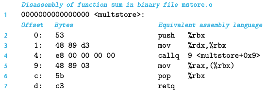
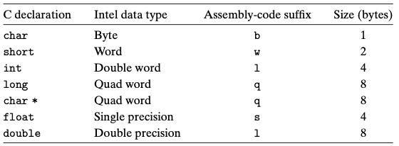
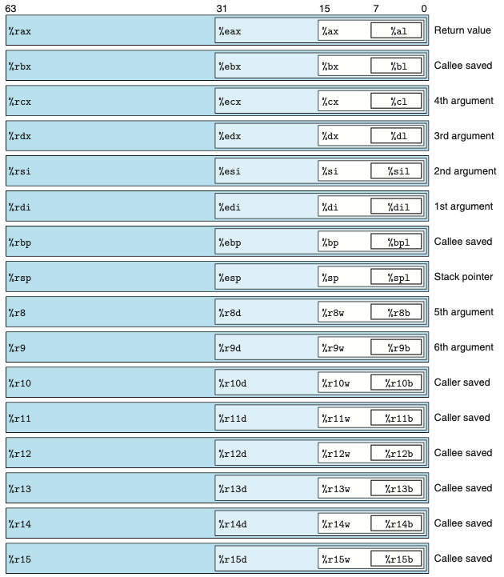
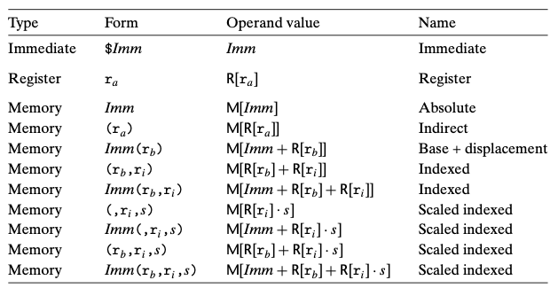
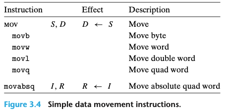
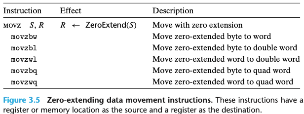
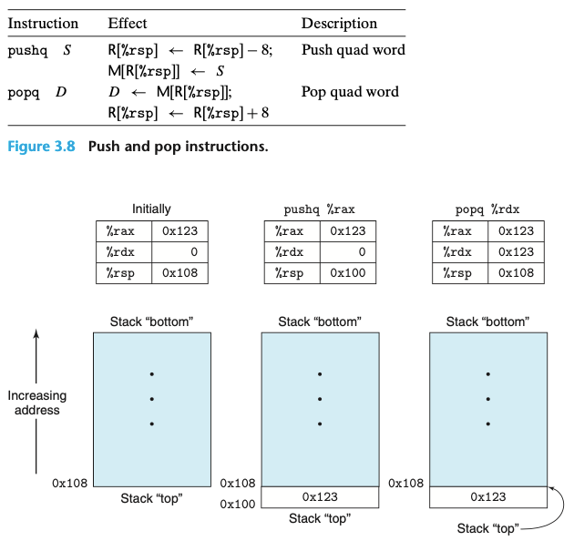

Chapter 03. 프로그램의 기계수준 표현
- 컴퓨터는 데이터를 처리하고, 메모리를 관리하고, 저장장치에 데이터를 읽거나 쓰고, 네트워크를 통해 통신하는 등의 하위 동작들을 인코딩한 연속되 바이트인 기계어 코드를 실행한다.
- 컴파일러는 프로그램 언어의 규칙, 대상 컴퓨터의 인스트럭션 집합, 운영체제의 관례 등에 따라 기계어 코드를 생성한다.
- 어셈블러 코드로 프로그램을 짤 때는 프로그래머가 계산을 하기 위해 사용해야 하는 저급 인스트럭션들을 명시해야 한다.
- 기계어 코드를 배우면 컴파일러의 최적화 성능을 알 수 있으며, 코드에 내제된 비효율성을 분석할 수 있다.
- 이 장은 X86-64에 기초하고 있다.
3.1 역사적 관점
- x86이라고 통칭하는 인텔 프로세서 제품군은 오랜 기간 진화를 통한 개발을 해왔다.
대충 엄청 많은 프로세서들이 나열 되는데, 팬티엄4E(2004, 125M 트랜지스터) 하이퍼쓰레딩 기법의 추가와 AMD사에서 개발한 IA32의 64비트 확장 구현인 EM64T가 추가된 해당 모델을 x86-64라고 부른다고 한다.
3.2 프로그램의 인코딩
- C 언어에서 gcc 명령은 소스 코드(test.c)를 실행 코드로 변환하기 위해 일련의 프로그램들을 호출한다.
- C 전처리가 #include로 명시된 파일을 코드에 삽입해 주고 #define으로 선언된 매크로를 확장해준다.
- 컴파일러는 소스파일의 어셈블러 버전(test.s)를 생성한다.
- 어셈블러는 어셈블리 코드를 바이너리 목적코드인(test.o)로 변환한다.
- 목적코드는 기계어 코드의 한 유형이다. - 모든 인스트럭션과 바이너리 표현을 포함하고 있지만 전역 값들의 주소는 아직 채워지지 않았다.
- 마지막으로 링커가 목적코드 파일을 라이브러리 함수들을 구현한 코드와 함께 합쳐서 최종 실행 파일인 p를 생성한다.
- 커맨드 라인 옵션으로 -0g를 주면 C 코드의 전체 구조를 따르는 기계어 코드를 생성하는 최적호 수준을 적용한다.
- 높은 수준의 최적화를 적용하면 만들어진 코드가 너무 많이 변경되어 본래의 코드와 생성된 기계어 코드 간의 관계를 이해하기 어렵다.
3.2.1 기계수준 코드
- 컴퓨터 시스템은 보다 간단한 추상화 모델을 이용해서 세부 구현내용을 감추면서 추상화의 여러 가지 다른 형태를 사용하고 있다.
- 기계수준 프로그램의 형식과 동작은 인스트럭션 집합구조 즉 “ISA”에 의해 정의된다.
- 프로세서의 상태, 인스트럭션의 형식, 프로세서 상태에 대한 각 인스트럭션들의 영향들을 정의한다.
- 기계수준 프로그램이 사용하는 주소는 가상주소이며, 메모리가 매우 큰 바이트 배열인 것처럼 보이게 하는 메모리 모델을 제공한다.
- 기계수준 프로그램의 형식과 동작은 인스트럭션 집합구조 즉 “ISA”에 의해 정의된다.
- 컴파일러는 추상화된 실행모델로 표현된 프로그램을 프로세서가 실행하는 매우 기초적인 인스트럭션들로 변환하는 대부분의 일을 수행한다.
3.2.2 코드 예제

- 기계어 코드의 몇몇 특징과 이들의 역어셈블된 표현에 주목할 필요가 있다.
- x86-64 인스트럭션들은 1에서 15바이트 길이를 갖는다.
- 인스트럭션의 형식은 주어진 시작 위치에서부터 바이트들을 기계어 인스트럭션으로 유일하게 디코딩할 수 있도록 설계한다.
- 역어셈블러는 기계어 코드 파일의 바이트 순서에만 전적으로 의존한다.
3.3 데이터의 형식
- 인텔 프로세서들이 근본적으로 16비트 구조를 사용하다가 추후에 32비트로 확장했기 때문에 인텔은 “워드”라는 단어를 16비트 데이터 타입을 말할 때 사용한다.

3.4 정보 접근하기
- x86-64 주처리장치 CPU는 64비트 값을 저장할 수 있는 16개의 범용 레지스터를 보유하고 있다.
- 이들 레지스터는 정수 데이터와 포인터를 저장하는데 사용한다.

3.4.1 오퍼랜드 식별자 specifier
- 대부분의 인스트럭션은 하나 이상의 오퍼랜드를 가진다.
- 오퍼랜드는 연산을 수행할 소스 값과 그 결과를 저장할 목적지의 위치를 명시한다.
- 소스 값은 상수로 주어지거나 레지스터나 메모리로부터 읽을 수 있다. 결과 값은 레지스터나 메모리에 저장된다.
- 세가지 타입으로 나뉘어짐
- immediate로, 상수값을 말한다.
- register는 레지스터의 내용을 나타내며
- Memory, 메모리 참조로 유효주소라고 부르는 계산된 주소에 의해 메모리 위치에 접근하게 된다.

3.4.2 데이터 이동 인스트럭션
- 가장 많이 사용되는 인스트럭션은 데이터를 한 위치에서 다른 위치로 복사하는 명령어다.
- MOV 클래스 : 소스 위치에서 데이터를 목적지 위치로 어떤 변환도 하지 않고 복사한다.
- 소스 오퍼랜드는 상수, 레지스터 저장 값, 메모리 저장 값을 표시한다.
- 목적 오퍼랜드는 레지스터 또는 메모리 주소의 위치를 지정한다.
- x86-64는 데이터 이동 인스트럭션에서 두 개의 오퍼랜드 모두가 메모리 위치에 올 수 없도록 제한하고 있다.


3.4.3 코드 예제
- C언어에서 “포인터”라고 부르는 것이 어셈블리어에서는 단순히 주소를 나타낸다.
- 포인터를 역참조하는 것은 포인터를 레지스터에 복사하고, 이 레지스터를 메모리 참조에 사용하는 과정으로 이루어진다.
- 지역변수들은 메모리에 저장되기보다는 종종 레지스터에 저장된다.
3.4.4 스택 데이터의 저장과 추출 push,pop
- push와 pop은 프로그램 스택에 데이터를 저장(push)하거나 스택에서 데이터를 추출(pop)하기 위해 사용한다.
- 스택은 프로시저 호출을 처리하는 데 중요한 역할을 한다.
- 프로그램 스택은 메모리의 특정 영역에 위치한다.
- 스택의 탑top 원소가 모든 스택 원소 중에서 가장 낮은 주소를 갖는 형태다.
- 스택은 pop이 되어도 stack의 top을 표현하는 주소가 올라간거지 값은 여전히 pop이 된 위치에 남아있다.
- 스택이 프로그램 코드와 다른 형태의 프로그램 데이터와 동일한 메모리에 저장되기 때문에 프로그램들은 표준 메모리 주소지정 방법을 사용해서 스택 내 임의의 위치에 접근할 수 있다.
